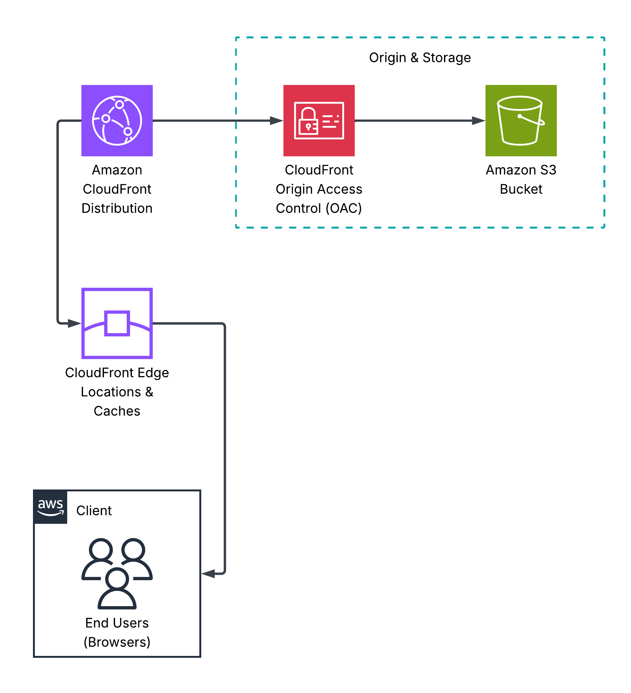
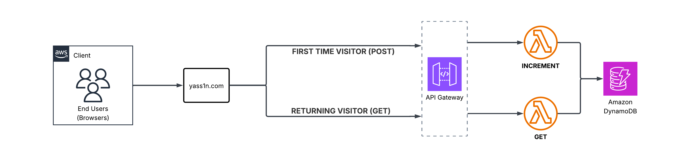

This website
Hello. This write-up walks you through the infrastructure behind my website and how everything is deployed and works together. I'll cover the basics quickly and focus more on the design choices and the reasoning behind the architecture.
You can view the repository for this website here.
To appropriately design system architecture, we must first define our problem statement. For me, the problem was:
"I want a personal website that is fast and easy to deploy AND update. I also want to track how many people visit my website without significantly increasing operational costs."
With that in mind, we begin.
Base infrastructure
Since I'm using my website to share my thoughts with the world, and the content is mostly static text, the standard S3 + CloudFront solution is sufficient. The architecture is demonstrated in the diagram below.
Unfortunately, this isn't convenient for users, as they would have to visit the website using the CloudFront distribution's domain name, which looks something like:
To fix this, we:
- Register a domain
- Attach the domain certificate to our CloudFront distribution
- Create an S3 bucket named after the domain name (it must have the same name as the domain, this will be our distribution's origin, more on why here)
- Add Route53 A and AAAA records pointing to your CloudFront distribution
Our architecture now looks like:

Now we move on to the fun stuff.
Keeping track of the views
To do this, we need a backend to store and increment the view count. We have many options here, but DynamoDB fits our requirements because it integrates easily with serverless architecture, making the overall cost cheaper. Serverless architecture in applications like this makes the operational cost essentially free.
We use JavaScript to call API Gateway when a user loads the website. If the user has visited before, we simply request the view counter from DynamoDB. If it's their first visit, JavaScript submits a POST request, which increments the counter before returning it to the frontend. The JavaScript code that detects whether the user is visiting for the first time is shown below:
To aid these transactions, we use Lambda.
Now that we've explained the architecture, we move on to the process of implementing and developing all of this.
Implementation and Development
Deploying the Infrastructure
While you could just finger-blast your way through the AWS console in order to configure this, this doesn't solve part of my problem statement: ensuring that my solution is fast to deploy.
My first attempt at this was using CloudFormation (CFN). While it works, it has several disadvantages:
- CFN is significantly slower compared to other solutions like Terraform.
- CFN does not support imports, so if a stack deletion fails, you're on your own to delete the remaining infrastructure that CFN no longer manages.
- CFN's change sets are far inferior compared to Terraform's state changes.
I discovered these issues by trying both tools, and the conclusion is clear: Terraform is better overall. CDK is another option worth considering. However, it lacks something Terraform has: cloud agnosticism. If you're working in a company with infrastructure hosted across multiple clouds, Terraform can manage all of it from a single directory. This is incredibly valuable for teams as it makes everything much easier to track and configure.
CI/CD pipelines: Making everything easy to integrate and develop further
The final touch that completes this project and satisfies the last part of my problem statement is making the infrastructure and website easy to update. We can achieve this by designing two CI/CD pipelines that automatically redeploy infrastructure changes AND update the website.
Two GitHub Actions Workflows (CI/CD pipelines) were designed and implemented:
- Backend (Infrastructure): This pipeline initializes and applies the Terraform templates, ensuring any changes to the templates are automatically applied to the infrastructure.
- Frontend (Website): This pipeline uploads webpage changes to the S3 bucket and invalidates the CloudFront cache, making the updates immediately available to users worldwide.
Putting everything together
The diagram below shows the complete architecture with more detail than the previous abstractions. It also serves as a helpful guide when exploring my repository, which you can check out here.